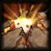
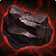

星界转移
90 秒（位面旅行者）· 持续 12 秒
全伤 −40%。全本唯一大减伤，按固定高压点预留；冰霜过载和熔火血脉等递增机制要延后到中后段再开。
红玉新生法池几乎全是高频冰、火、自然法术全团轰炸。元素萨满没有免疫，靠 90 秒星界转移盯紧固定点（采掘冲击/钢铁弹幕、梅莉杜莎冰霜过载、火环廊地狱烈火、雷电台闪电涌流、尾王烈焰喷吐），土元素（始源羁绊）补空档，净化术秒驱鞭笞者荣耀烈焰与破原始雷云护盾。唯一要注意：冰霜过载与熔火血脉都是递增跳伤，星界转移要延后到中后段再开，别起手交空。
四张手牌管住全本，外加一条机制硬限制与五组必断读条。
全伤 −40%。全本唯一大减伤，按固定高压点预留；冰霜过载和熔火血脉等递增机制要延后到中后段再开。
配始源羁绊不再嘲讽，改为最大生命值 +15%。专门补星界空档：梅莉杜莎二轮过载、德拉加尔、烈焰之咽与尾王喷吐。
全本双核心目标：秒驱鞭笞者临死荣耀烈焰免躲火球，破原始雷云雷云屏障（85% 盾）触发引爆清场。
打断后 12 秒受法伤 −15%，覆盖全本绝大部分冰火自然法伤。盯紧下方必断读条与可断引导。
一场 +24 限时实录（展示真实冷却节奏，非每波强制照搬；具体取舍见下方路线）。
看到什么 → 按什么 → 为什么。带「必做」标签的高亮行是每把必做的关键动作。伤害数字是 +24 实测（含被吸收的部分），层数越高越大。


取自 +24 限时录像的元素天赋，英雄天赋先知。复制字符串，在游戏天赋界面点「导入」。
CYQAAAAAAAAAAAAAAAAAAAAAAAAAAAzMbLzMGjZZbZMmhZAAAAgFzsBDYAzGTgZBAmlZmZM2WMhZGjlZmZGjZxyMzywYmZBAMDAMzYYYA
这四个防御天赋不要动
常见可换：大地之盾、元素环绕、塞拉赞恩的韧性、治疗链 ↔ 先祖狼魂亲和、图腾集中、升涌气流；位移可选 阵风 ↔ 幽魂步；本本无中毒减益无需点清毒图腾。另必配净化术、恩赐之魂、自然守护者与狂风图腾（转区跑图）。